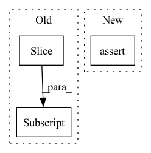

Pattern ID :6933

Before Change
generator = np.random.default_rng(FLAGS.ssl_seed)
indices = list(range(len(sets)))
generator.shuffle(indices)
sets = torch.utils.data.Subset(sets, indices[:subset])
assert len(sets) == subset
return sets
After Change
indexs = np.array(indexs)
num_labels = np.max(labels) + 1
assert subset % num_labels == 0
final_indices = []
for i in range(num_labels):
In pattern: SUPERPATTERN
Frequency: 3
Non-data size: 3
Instances
Fragment ID: 23276099
Project Name: taufikxu/triple-gan
Commit Name: a5806d6c30b93639183d013677660d16145947a4
Time: 2020-06-16
Author: kunxu.thu@gmail.com
File Name: library/data_iters.py
M Class Name: AnonimousClass
N Class Name: AnonimousClass
M Method Name: get_dataset(2)
N Method Name: get_dataset(2)
M Parent Class:
N Parent Class:
M File Name: library/data_iters.py
N File Name: library/data_iters.py
M Start Line: 121
M End Line: 123
N Start Line: 121
N End Line: 138
'>
Before Change
split_point = int(len(base_tr_dataset) * (1 - self.val_split))
np.random.shuffle(idxs)
tr_subset = Subset(base_tr_dataset, idxs[:split_point])
val_subset = Subset(base_tr_dataset, idxs[split_point:])
return tr_subset, val_subset
After Change
)
assert len(tr_subset) + len(val_subset) == len(tr_dataset)
assert len(set(tr_subset.indices).intersection(set(val_subset.indices))) == 0
return tr_subset, val_subset
'>
Fragment ID: 23276098
Project Name: microsoft/archai
Commit Name: d1dd0a59dc86ff271b12e111596b7cbefa2675d3
Time: 2022-12-16
Author: pierokauffmann@gmail.com
File Name: archai/datasets/providers/multi_lmdb_image_provider.py
M Class Name: MultiTensorpackLmdbImageProvider
N Class Name: MultiTensorpackLmdbImageProvider
M Method Name: get_train_val_datasets(3)
N Method Name: get_train_val_datasets(3)
M Parent Class: DatasetProvider
N Parent Class: DatasetProvider
M File Name: archai/datasets/providers/multi_lmdb_image_provider.py
N File Name: archai/datasets/providers/multi_lmdb_image_provider.py
M Start Line: 89
M End Line: 102
N Start Line: 89
N End Line: 113
'>
Before Change
ed = int(tick_to_time[tempos[i + 1].time] * rate * time_aug_factor)
tempo_seq[st:ed] = int(tempos[i].tempo + 0.5)
st = int(tick_to_time[tempos[-1].time] * rate * time_aug_factor)
tempo_seq[st:] = int(tempos[-1].tempo + 0.5)
return note_seq, tempo_seq
After Change
tempos = midi_obj.tempo_changes
tempos.sort(key=lambda x: (x.time, x.tempo))
assert len(tempos) == 1
tempo_BPM = tempos[0].tempo // global information, beats per minute
tempo_BPS = tempo_BPM / 60.0 // global information, beats per second
'>
Fragment ID: 23276094
Project Name: sjtmusicteam/muskits
Commit Name: 976232e4df99bdbc8298e2a20436034edc51e9ab
Time: 2022-01-10
Author: 2016202112@ruc.edu.cn
File Name: muskit/fileio/utils.py
M Class Name: AnonimousClass
N Class Name: AnonimousClass
M Method Name: midi_to_seq(5)
N Method Name: midi_to_seq(5)
M Parent Class:
N Parent Class:
M File Name: muskit/fileio/utils.py
N File Name: muskit/fileio/utils.py
M Start Line: 41
M End Line: 60
N Start Line: 41
N End Line: 66